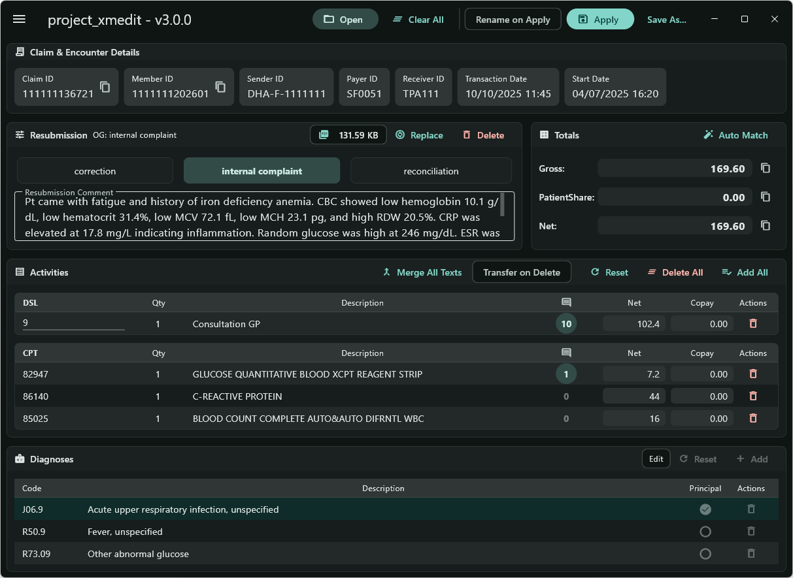

A Modern XML Editor, Reimagined
Project XMEdit is a powerful desktop app for editing DHPO medical resubmission files, built to make claim corrections faster and more intuitive.
Download Latest VersionDesigned for Efficiency
✍️ Comprehensive Editing
Modify claim details, totals, activities, and resubmission data with a user-friendly interface.
⚕️ Diagnosis Management
Add and delete diagnoses with a built-in ICD-10 code and description search.
📎 Observation Manager
Full CRUD support for observations, including file attachments with drag-and-drop.
🚀 Bulk Operations
Merge text-based observations and transfer observations from deleted activities.
🎨 Customizable UI
Supports both Dark and Light modes with multiple theme colors to fit your workflow.
✅ Smart Validation
Automatically validates data entry to minimize errors before saving the file.
Getting Started
1. Install Runtime
This application requires the Microsoft Visual C++ Redistributable. Find the latest X64 version on the official page.
Find VC++ Redistributable2. Unzip and Run
- Download the latest package from the Releases Page.
- Unzip the downloaded file.
- Run project_xmedit.exe.
Application Preview
